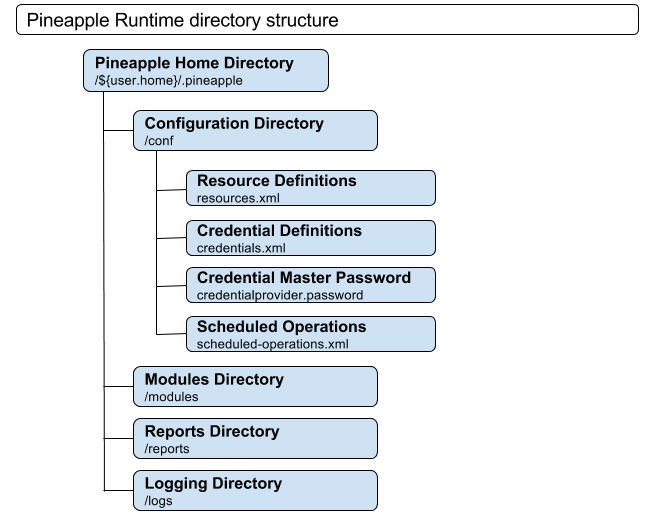
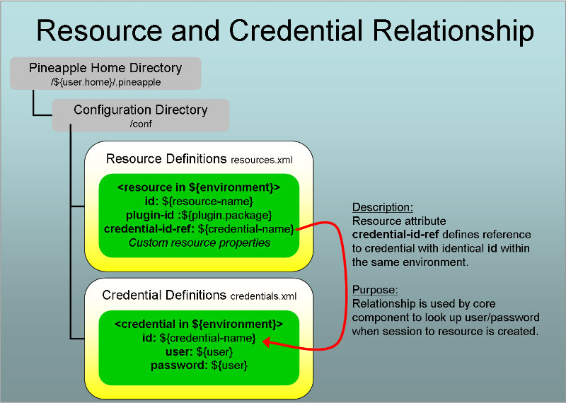

Environment Configuration Reference
- Introduction
- Resource overview
- Security credentials overview
- Environment configuration details
- Wildcard environment for resources
Introduction
Purpose of environment configuration
The environment configuration defines a model of all the manageable entities which can be used by Pineapple, either as target for testing, information retrieval or configuration.
Entities defined in the environment configuration
Two types of entities are defined in the environment configuration:
- Resources - manageable entities.
- Security Credentials - security information to access resources.
The environment configuration schema
The resource and security credential are defined in the environment configuration schema. The schema defines the namespace http://pineapple.dev.java.net/ns/environment_1_0
For more information about environment configuration schema, refer to the Schema location page.
Two configuration files but a single schema
The environment configuration is split into the two files resources.xml and credentials.xml. Resources are defined in resources.xml and security credentials are defined in credentials.xml. The reason why the Pineapple uses two file for environment configuration is to decouple security information from resource definitions. So that security information in time can come in different and more protected forms than it is the case with Pineapple in its current incarnation. Both files must adhere to the same schema, so technically there is no problems with defining credentials in resources.xml and verse visa. Pineapple will ignore credentials defined in resources.xml and ignore resources defined in credentials.xml.
Resource overview
The notion of a resource is one of the three central concepts in Pineapple (plugins and modules being the other two). A resource is any manageable entity which is part of the JEE platform that the tool is used to manage. A resource can be anything as long as there can be written an API to interface the thing and manage it. Examples are: operating systems, FTP-servers, JEE containers, load balancers..
A resource is defined by four attributes
A resource is defined by four attributes:
- id: identifies the resource within an environment and is used to reference the resource from modules.
- credential-id-reference: defines a reference to the security credential should be used to access the resource.
- plugin-id: Defines the plugin id of the plugin which implements functionality to interface the resource.
- properties: plugin specific properties to connect to the resource.
Resources are defined in resource.xml
Resources are by default defined in a file named resources.xml which must adhere to the environment configuration schema whose content is described in the details section below. The file is by default located in the directory ${pineapple.home.dir}/conf which by default is resolved to ${user.home}/.pineapple/conf.
If needed then consult the documentation for the specific Pineapple clients for information about changing the name and location of the file.
Resource are grouped by environment
The resources are grouped by environment as a similar resources often will exist in multiple computing environments. An example could be an administration server for a WebLogic domain, where multiple domains can exists for different purposes, i.e. development, test, QA and production.
Purpose of a resource
Definition of a resource achieves these goals:
- The resource is usable from any modules.
- Defines information to access the resource
- Security information is decoupled from the resource
- Decoupling of platform specific information from modules
- The resource is bound to a plugin
The resource is usable from modules
The resource id is a unique identification of the resource (in the environment it's defined in). The resource identifier is then accessible from any module (again on a per environment basis).
Example: Definition of a resource which defines a WebLogic administration server (in a QA environment) with the id "qa-deployment" makes the the server accessible from any module which can use the server by referring to its resource id.
Defines information to access the resource
The properties defines additional properties which is used by Pineapple and the plugin to actually access the resource.
Example: Some specific information is required to access the server described the example above. Information like protocols, URL's and ports. These bits of information are stored in the properties attribute of a resource.
Security information is decoupled from the resource
Not all information needed to access the resource is stored in the properties attribute. Security information is decoupled from the resource and stored in a separate security credential.
The credential-id-reference refers to the credential which contains the user and password used to access the resource. Security credentials is the other type of entity which is defined in the environment configuration and it is described below.
Decoupling of platform specific information from modules
Definition of the server in the example above results in a decoupling of platform specific information about servers ( URL's, ports, user/passwords) from the modules.
A module which contains an application can refer to its target administration server for deployment using only the resource id. All the specifics are defined in the referenced resource.
The result is that platform specific information about servers can be concentrated in one place - the environment configuration.
The resource is bound to a plugin
The plugin id attribute in the resource binds the resource to the plugin. At runtime Pineapple uses the plugin id attribute to activate and delegate execution to the plugin with the module model as input.
Example: The WebLogic administration server defined above must be mapped to a plugin which can handle operations on this kind of resource. The operations on the server could either be control of the server (start/stop), configuration of the server (using JMX or WLST) or deployment of applications (using JMX, JSR88 or a WebLogic specific tool like welogic.Deployer). Here are already ideas for six different plugins: weblogic-control, weblogic-config-with-jmx, weblogic-config-with-wlst, weblogic-deployment-with-jmx, weblogic-deployment-with-jsr88 and weblogic-deployment-with-wlsdeploy.
The task during definition of a resource is to select the appropriate plugin for the resource. In the example it would be appropriate to select one of the weblogic-deployment-with-XX plugins as the resource is used for deployment of applications.
The plugin attribute contains the plugin id for the used plugin. Plugins are identified by an id which is identical to the root Java package in which plugin is implemented. Pineapple uses the plugin id run time to activate the designated plugin and delegate all the actual work to the plugin. For information on plugin id's, refer to the Plugin framework reference.
Security credentials overview
A security credential defines security information used to access a resource.
A credential is defined by three attributes
- id: identifies the credential within an environment and is used to reference the credential from resources definition (described in the the previous section).
- user: defines user name used to access resource.
- password: defines password used to access resource.
Security credentials are defined in credentials.xml
Security credentials are by default defined in a file named credentials.xml which must adhere to the environment configuration schema whose content is is described in the details section below. The file is by default located in the directory ${pineapple.home.dir}/conf which by default is resolved to ${user.home}/.pineapple/conf.
If needed then consult the documentation for the specific Pineapple clients for information about changing the name and location of the file.
Security credentials are grouped by environment
The credentials are grouped by environment as a similar resource often will in multiple computing environments hopefully requires different user/password to access the resource.
Purpose of a credential
Definition of a credential achieves these goals:
- The credential is usable from any resource.
- Security information is decoupled from the resource
The credential is usable from any resource
The id is a unique identification of the credential (in the environment it's defined in). The credential identifier is then accessible from any resource (again on a per environment basis).
If the same security information is used to access different resources then it is possible for multiple resources to reference the same credential.
Example: TODO: write..
Environment configuration details
This section is a detailed description of how to define environment configuration files which adheres to the environment configuration schema.
The minimal configuration file
The minimal file for resources.xml and credentials.xml looks like:
<?xml version="1.0" encoding="UTF-8"?>
<configuration xmlns="http://pineapple.dev.java.net/ns/environment_1_0"
xmlns:xsi="http://www.w3.org/2001/XMLSchema-instance"
xsi:schemaLocation="http://pineapple.dev.java.net/ns/environment_1_0
http://pineapple.dev.java.net/ns/environment_1_0.xsd" />
The ?xml element defines an XML file with UTF-8 encoding.
The top level element for a environment configuration file is configuration. The element contains attributes which defines the used XML schema.
Usage of the environment configuration schema as the main schema is defined with the xmlns attribute:
xmlns="http://pineapple.dev.java.net/ns/environment_1_0
Inclusion of the XML-Schema schema with namespace xsi is defined by:
xmlns:xsi="http://www.w3.org/2001/XMLSchema-instance"
Specification of the schema location for the environment configuration schema is defined by:
xsi:schemaLocation="http://pineapple.dev.java.net/ns/environment_1_0
http://pineapple.dev.java.net/ns/environment_1_0.xsd"
Defining environments
All resources and credentials are placed in a environment:
<?xml version="1.0" encoding="UTF-8"?>
<configuration xmlns="http://pineapple.dev.java.net/ns/environment_1_0"
xmlns:xsi="http://www.w3.org/2001/XMLSchema-instance"
xsi:schemaLocation="http://pineapple.dev.java.net/ns/environment_1_0
http://pineapple.dev.java.net/ns/environment_1_0.xsd">
<environments>
<environment id="local-development" description="my local development environment" >
<credentials/>
<resources/>
</environment>
</environments>
</configuration>
- The environments element is a container for environment elements.
- The environment element defines a single environment.
- The id attribute defines a unique identifier for the environment. It must be unique with in the file.
- The description attribute describes the environment. The description is optional.
- The credentials element is a container for credentials. Credentials is optional.
- The resources element is a container for resources. Resources is optional.
Example with six environments:
<?xml version="1.0" encoding="UTF-8"?>
<configuration xmlns="http://pineapple.dev.java.net/ns/environment_1_0"
xmlns:xsi="http://www.w3.org/2001/XMLSchema-instance"
xsi:schemaLocation="http://pineapple.dev.java.net/ns/environment_1_0
http://pineapple.dev.java.net/ns/environment_1_0.xsd">
<environments>
<environment id ="Workstation" />
<environment id="Development-1" />
<environment id="Test-1" />
<environment id="Test-2" />
<environment id="QA-1" />
<environment id="Production-1" >
<environment id="Production-2" >
</environments>
</configuration>
Defining resources
Resources are defined in the resources container element belonging to an environment:
<?xml version="1.0" encoding="UTF-8"?>
<configuration xmlns="http://pineapple.dev.java.net/ns/environment_1_0"
xmlns:xsi="http://www.w3.org/2001/XMLSchema-instance"
xsi:schemaLocation="http://pineapple.dev.java.net/ns/environment_1_0
http://pineapple.dev.java.net/ns/environment_1_0.xsd">
<environments>
<environment id="local-development" description="my local development environment" >
<resources>
<resource id="weblogic-deployment"
credential-id-ref="weblogic-deployment-credential"
plugin-id="com.alpha.pineapple.plugin.weblogic.deployment" >
<property key="adminserver-protocol" value="t3" />
<property key="adminserver-listenaddress" value="127.0.0.1" />
<property key="adminserver-listenport" value="7001" />
</resource>
<resources>
</environment>
</environments>
</configuration>
- The resource element defines a resource.
- The id attribute defines a unique identifier for the resource. It must be unique within the environment.
- The credential-id-ref attribute defines a references to the used credential. The attribute can be optional depending on whether the used plugin requires credentials to create a session. The referenced credential must be defined in the credentials.xml and in the same environment as the resource.
- The plugin-id attributes defines the plugin id for the used plugin.
- The property element defines a single property. Each property is defined with a key attribute and one value attribute.
Defining security credentials
Credentials are defined in the credentials container element belonging to an environment:
<?xml version="1.0" encoding="UTF-8"?>
<configuration xmlns="http://pineapple.dev.java.net/ns/environment_1_0"
xmlns:xsi="http://www.w3.org/2001/XMLSchema-instance"
xsi:schemaLocation="http://pineapple.dev.java.net/ns/environment_1_0
http://pineapple.dev.java.net/ns/environment_1_0.xsd">
<environments>
<environment id="local-development" description="my local development environment" >
<credentials>
<credential id="weblogic-deployment-credential" user="weblogic" password="weblogic" />
<credentials>
</environment>
</environments>
</configuration>
- The credential element defines a security credential.
- The identifier attribute defines a unique identifier for the credential. It must be unique within the environment.
- The user attribute defines the user name.
- The password attribute defines the password.
Referencing credentials from resources
Resources defined in resources.xml must reference a credential which is defined in credentials.xml:
Or shown in XML:
<!-- credential.xml: -->
<?xml version="1.0" encoding="UTF-8"?>
<configuration xmlns="http://pineapple.dev.java.net/ns/environment_1_0"
xmlns:xsi="http://www.w3.org/2001/XMLSchema-instance"
xsi:schemaLocation="http://pineapple.dev.java.net/ns/environment_1_0
http://pineapple.dev.java.net/ns/environment_1_0.xsd">
<environments>
<environment id="local-development" description="my local development environment" >
<credentials>
<credential id="weblogic-deployment-credential" user="weblogic" password="weblogic" />
<credentials>
</environment>
</environments>
</configuration>
<!-- resource.xml: -->
<?xml version="1.0" encoding="UTF-8"?>
<configuration xmlns="http://pineapple.dev.java.net/ns/environment_1_0"
xmlns:xsi="http://www.w3.org/2001/XMLSchema-instance"
xsi:schemaLocation="http://pineapple.dev.java.net/ns/environment_1_0
http://pineapple.dev.java.net/ns/environment_1_0.xsd">
<environments>
<environment id="local-development" description="my local development environment" >
<resources>
<resource id="weblogic-deployment"
credential-id-ref="weblogic-deployment-credential"
plugin-id="com.alpha.pineapple.plugin.weblogic.deployment" >
<property key="adminserver-protocol" value="t3" />
<property key="adminserver-listenaddress" value="127.0.0.1" />
<property key="adminserver-listenport" value="7001" />
</resource>
<resources>
</environment>
</environments>
</configuration>
The resource in the resource.xml defines a references to a credential with the credential-id-ref attribute:
<resource id="weblogic-deployment"
credential-id-ref="weblogic-deployment-credential"
plugin-id="com.alpha.pineapple.plugin.weblogic.deployment" >
The value of the credential-id-ref attribute must credential must be defined in the credentials.xml in the same environment as the resource is defined in.
Wildcard environment for resources
The wildcard environment is supported for configuration of resources. It is not supported for credentials.
Purposes of the wildcard environment
The purposes are:
- Support for refactoring of common identical resource definitons into a single resource definiton.
- Support usage of resources in non-existing environments. A resource defined in the wildcard environment is per definition defined for all (future) environments.
Name of the wildcard environment
The wildcard environment for resources can be defined using the name *.
How a resource is resolved using the the wildcardenvironment
The general idea for resolution of a resource E.R using the wildcard environment is that Pineapple will first try to resolve the resource R in enviromment E. If the resource doesn't exist then Pineapple will tryg to resolve the R in enviromment *.
Resolution rules:
| Environment E | Resource E.R | Environment * | Resource *.R | Result |
| 0 | 0 | 0 | 0 | Error: E.R not found |
| 1 | 0 | 0 | 0 | Error: E.R not found |
| 1 | 1 | 0 | 0 | E.R |
| 0 | 0 | 1 | 0 | Error: E.R not found |
| 1 | 0 | 1 | 0 | Error: E.R not found |
| 1 | 1 | 1 | 0 | E.R |
| 0 | 0 | 1 | 1 | *.R |
| 1 | 0 | 1 | 1 | *.R |
| 1 | 1 | 1 | 1 | E.R |
Example of using the wildcard environment
This example shows a resources.xml with two environments each defining a resource named infrastructure-test:
<?xml version="1.0" encoding="UTF-8"?>
<configuration xmlns="http://pineapple.dev.java.net/ns/environment_1_0"
xmlns:xsi="http://www.w3.org/2001/XMLSchema-instance"
xsi:schemaLocation="http://pineapple.dev.java.net/ns/environment_1_0
http://pineapple.dev.java.net/ns/environment_1_0.xsd">
<environments>
<environment description="..." id="windows-default">
<resources>
<resource plugin-id="com.alpha.pineapple.plugin.net" id="infrastructure-test"/>
....
</resource>
</resources>
</environment>
<environment description="..." id="linux-default">
<resources>
<resource plugin-id="com.alpha.pineapple.plugin.net" id="infrastructure-test"/>
....
</resource>
</resources>
</environment>
</environments>
</configuration>
The common resource definition infrastructure-test can be refactored into the wildcard environment. The result is that the resource infrastructure-test is supported all other environments (including in two defined environments):
<?xml version="1.0" encoding="UTF-8"?>
<configuration xmlns="http://pineapple.dev.java.net/ns/environment_1_0"
xmlns:xsi="http://www.w3.org/2001/XMLSchema-instance"
xsi:schemaLocation="http://pineapple.dev.java.net/ns/environment_1_0
http://pineapple.dev.java.net/ns/environment_1_0.xsd">
<environments>
<environment description="Wildcard environment." id="*">
<resources>
<resource plugin-id="com.alpha.pineapple.plugin.net" id="infrastructure-test"/>
....
</resource>
</resources>
</environment>
<environment description="..." id="windows-default">
<resources>
....
</resource>
</resources>
</environment>
<environment description="..." id="linux-default">
<resources>
....
</resource>
</resources>
</environment>
</environments>
</configuration>
Resolution of credential references for resources defined in the wildcard environment
If a resource defined in the wildward environment defines a credential reference, through the credential-id-ref attribute then credental will be resolved to the credential defined in the environment which the operation is invoked with.